Project Overview
TeamApp is an application aimed at connecting creative individuals with visionary project initiators, enabling them to form teams for various creative projects.
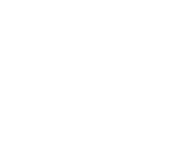
2025
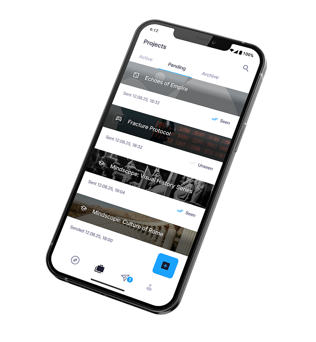
TeamApp is an application aimed at connecting creative individuals with visionary project initiators, enabling them to form teams for various creative projects.
A common challenge for creative individuals is the inability to find peers who are both available and interested in collaborating on meaningful projects. On the flip side, idea-driven people often struggle to gather a capable team. As a consequence, many great ideas remain unrealized, and valuable talent goes unnoticed.
My role covered the full end-to-end design process, from early research and concept to final UI design. This included exploring user needs, motivations, and collaboration barriers on both sides of the platform. Based on these insights, I shaped the product direction, defined key user flows, and designed wireframes, interactive prototypes, and the final interface.
Over the course of seven weeks, the project moved through four key phases, each building on the previous to reach the final outcome.
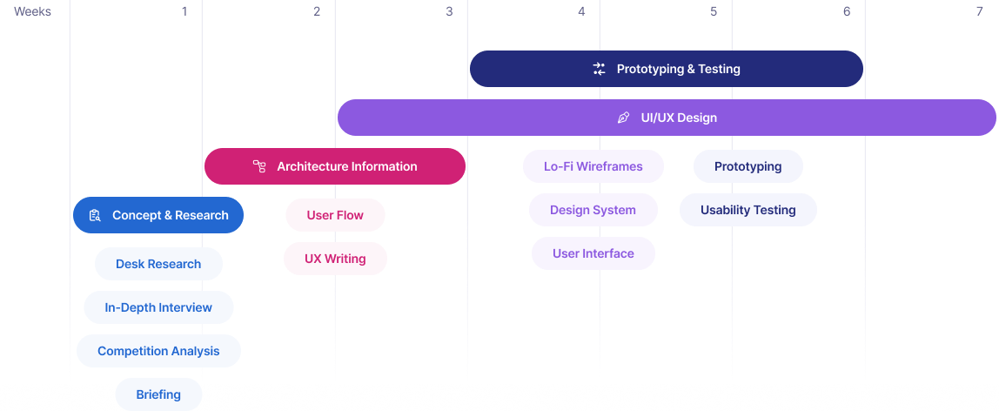
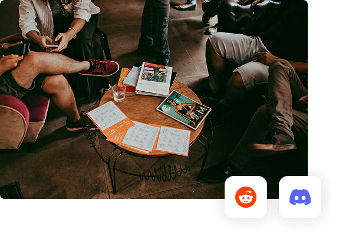
It all began with conversations with people I knew who wanted to get involved in creative projects but didn't know where to start. That got me curious, so I started exploring the topic online. I came across Reddit and Discord communities where people were looking for teammates and coming together to work on projects.
Some of these communities had several new posts every day, showing that this was a recurring need rather than an isolated problem.
Finding these communities made me curious about the people behind the posts. I wanted to understand what motivated them to join projects, how they looked for teammates, and what challenges they encountered along the way.
To explore this further, I found five people online who were willing to share their experiences. Each conversation started with a few questions about their past experiences, followed by scenarios that helped me understand how they approached collaboration and made decisions.
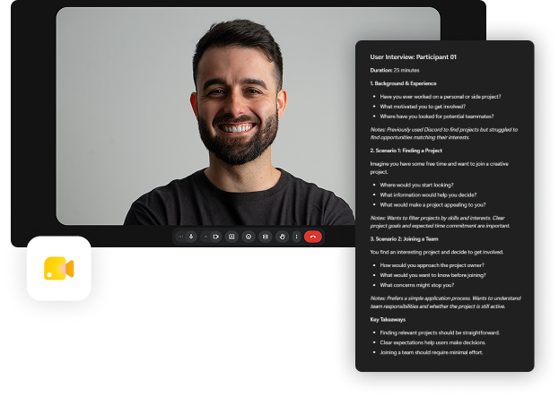
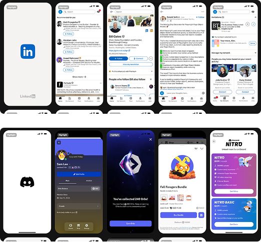
I then explored how existing platforms approached similar challenges, focusing on interaction patterns and design solutions that could help me.
Using Mobbin, I reviewed a wide range of examples to identify familiar patterns and design solutions that could work well for TeamApp. Exploring platforms such as LinkedIn, Just Join IT, and Discord was particularly valuable, as they addressed similar challenges in different ways.
With a better understanding of the problem and potential users, I moved on to defining the scope of the app. I organized my ideas in Notion and outlined the features I wanted to include.
From there, I prioritized the features, separating what was essential for the MVP from what could be added later. This gave me a clear direction for the next stages of the project.
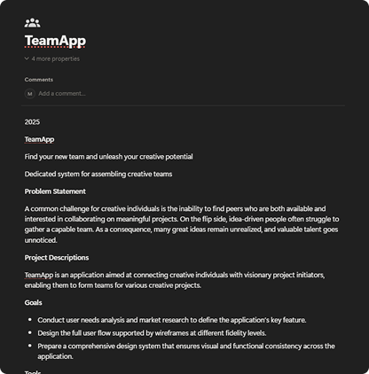
With the scope defined, I moved on to mapping user flows in Miro. I outlined the main steps and alternative paths across the key areas of the app. This helped me understand how different parts of the experience would connect and provided a foundation for designing the interface.
With the user flows in place, I moved on to designing the interface in Figma and built a design system alongside the screens. I translated the mapped steps into high-fidelity screens, defining the layout, visual style, and components across the app.
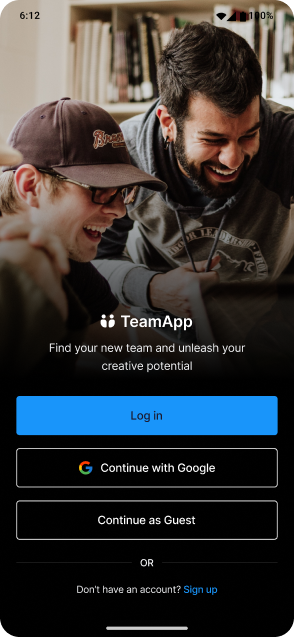
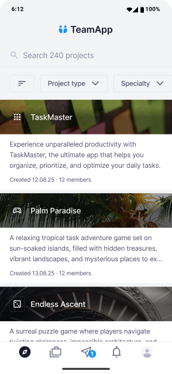
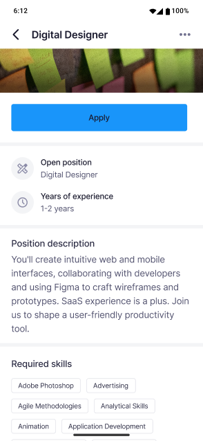
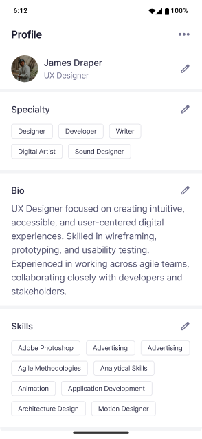
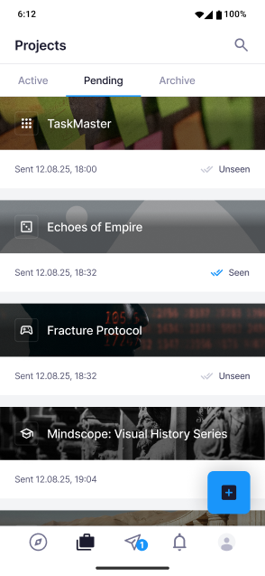
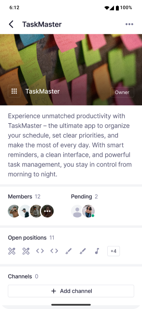
Throughout the design process, I tested the evolving interface to see how people would use the app. I focused on whether they could understand the navigation and complete the main tasks, then used what I learned to improve unclear steps.
Contact
Whether you have a question or just want to connect, feel free to reach out at:
marcin.zajko97@gmail.com